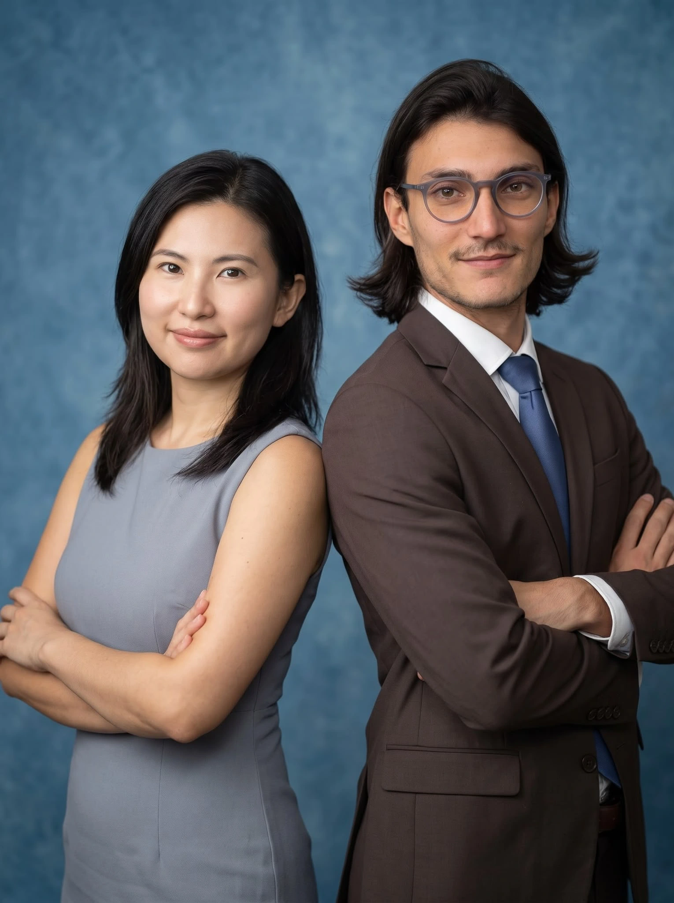

Independence.
By design.
A considered way to connect people, places and operations.
A meeting of curiosity & drive.
WINDCHIC began with two international journeys and a shared instinct: business becomes better when the right people can work together, beyond language and local complexity.
Théo returned from months spent exploring the commercial landscape in Vietnam. Wenjing came to France to study the language, understand the market and build meaningful connections. Both had seen the same gap between intention and execution.
We built a studio to close that gap—one carefully defined project at a time.

Two perspectives.
One standard.
Wenjing connects Chinese-speaking clients, understands their expectations and leads cross-cultural project communication.
Théo coordinates sourcing, negotiations, suppliers and operations across France and Europe.
Together, we combine five working languages—French, English, Spanish, Chinese and German—with one shared belief: care is found in the details.
Get to know us ↗Independent thinking.
We start with the brief, not a pre-packaged solution.
Considered partnerships.
Our suppliers are an extension of how we deliver—not names selected at random.
On-the-ground precision.
Details, constraints and decisions are managed where they matter.
Independence in every detail.
Our original mark remains. What evolves is the way we express the studio: considered typography, striking imagery, precise detail.